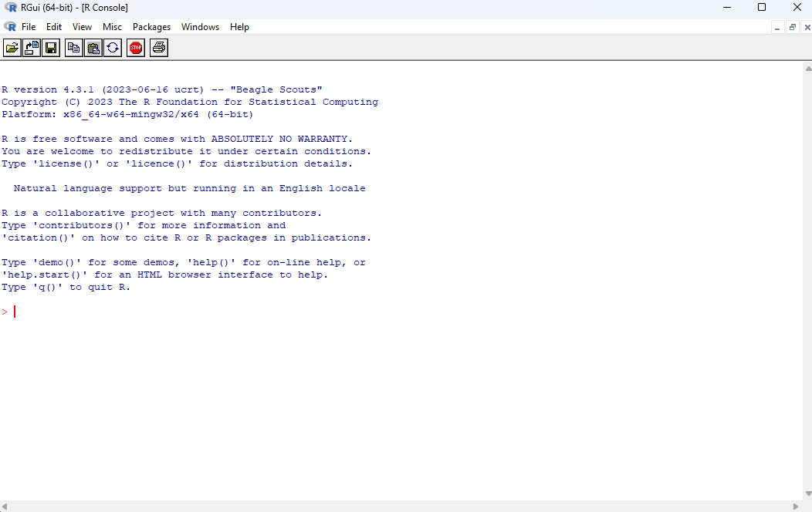
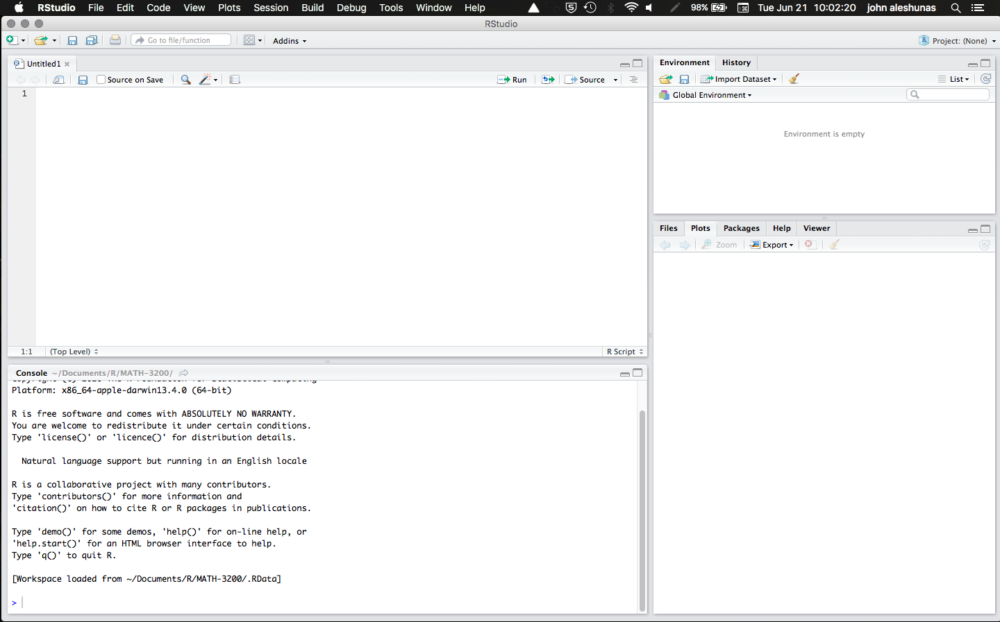
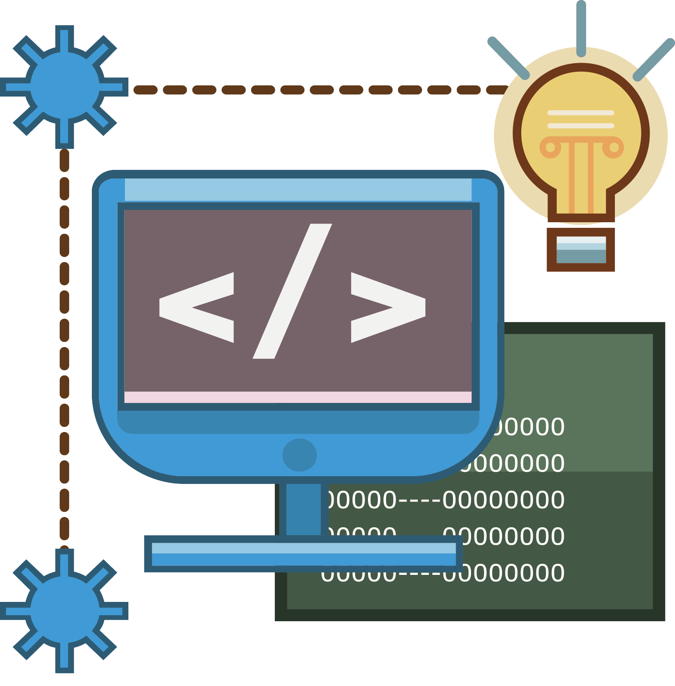
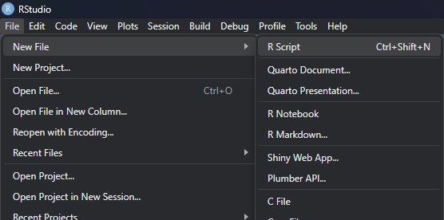
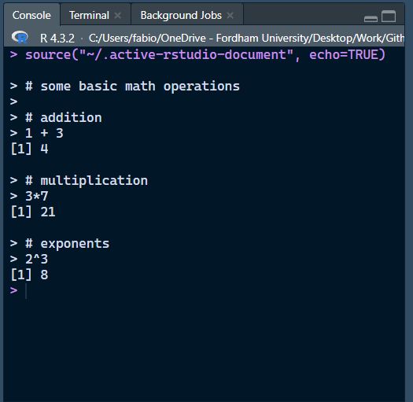
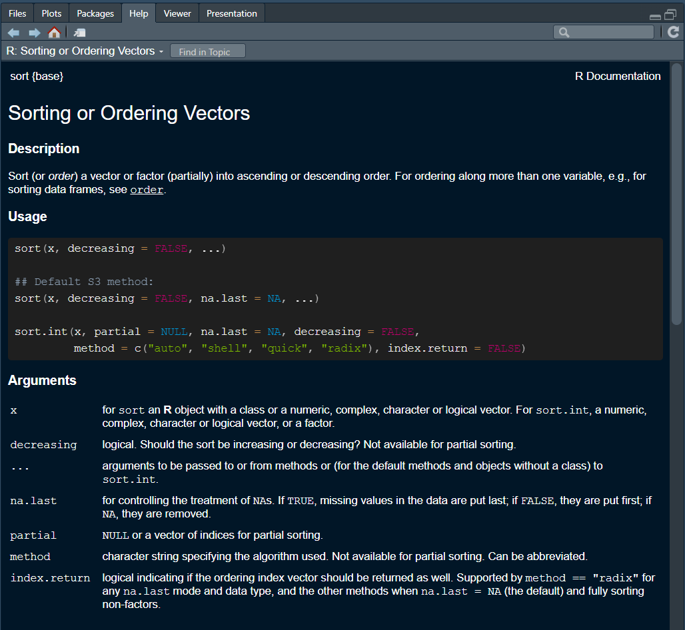

Today we are going to only go over some of the basics. but keep in mind these two points:
There are multiple ways of doing the same thing in R. As long as you get to the desired result, how you got there is (usually) irrelevant.
R can do just about anything you can think of. In most cases, the only limit is your imagination and your Googling 🔎 skills.
What is RStudio?
Whereas R is a programming language, RStudio is an integrated development environment (IDE…a what? 😕)
An IDE is a software that facilitates writing code in general. Although RStudio was developed with R in mind, it also supports many other programming languages (e.g., Python, Javascript, C…)
Likewise, you do not need RStudio to use R. However, RStudio is by far the best IDE for R and it makes the process much more efficient!
Not super important, but just a distinction that I wanted to point out
🤷
FYI
You will never have to open R directly, but this is what R looks like compared to RStudio:


Rstudio: What Am I Looking At?
The RStudio interface is divided into 4 panes:
Source (top-left): This pane is where we will do most of our work. Here is were you can edit and run your code files.
Environment (top-right): This is where you can find the objects that are present in the current R session.
Console (bottom-left): The console is actually R by itself (the R console) and it is how RStudio runs R. You will find output, messages, and warnings here.*
Viewer (bottom-right): This is a bit of a catch-all pane. Here, you will find plots, installed packages, help for functions, and your computer folders (under files)
* Extra info:You can actually write and run code directly in the console, but you cannot save your code (which you should always do!). When you run your code from the Source pane, RStudio sends it to the console to be interpreted. All computer code is just plain text; what you need to run code of a certain computer language is to have something that interprets it and runs it. The R console is what interprets and runs your code (Hence why you need to have R on your computer to use R in RStudio)
R Basics

Creating a new script
Before we can do any coding, we need to open a new R script! To do that navigate to file → new file → R script
A tab named “Untitled1” will appear in your source pane.
This is where we are going to write code!
As any other file, you can later save this file anywhere on your computer. It will have the .R extension.

Save your New R script to the Workshop folder and name it
Running Code and Mathematical Operations
R can perform just about any mathematical operation. At the same time, let’s see how to run some code:
In Rsudio, you can either run one or more line of code at once, or run the whole R script file at once.
One or more lines: highlight the lines that you want to run and press CTRL+Enter (Win) or CMD+Return (Mac)
Entire Script: press CTRL+Shift+Enter (Win) or CMD+Shift+Return (Mac).
Copy the code chunk on the right into your R script and try running the full script.
# some basic math operations# addition1+3# multiplication3*7# exponents2^3
Output
You will see your code with output appear in the console.
Output is indicated by “[n]”, where n represents the line of the output.
Here we only have one line for output each of our inputs (the 3 math operations), but you can have more lines.
The # sign represents comments. R will not run commented lines. Comments are good for explaining code to either your future self or to other people reading your code!

A Note on how R Interprets Code
R “reads” code until it find the end of a statement (code that produces output), and then expects the following statement to appear on a new line.
# The line below is a statement(4+5)*2
[1] 18
# The this will not run (2 statements on the same line)(4+5)*26+6
# This is not good prectice, but it will run.(4+5)*26+6
[1] 18
[1] 12
Note: Spacing among elements of a statement is irrelevant, but it is good practice to be reasonable and consistent.
Objects
Just as many other programming languages, R is object-oriented. You can think of objects as containers where information is stored.
To create an object in R, you use the “<” + “-” (assignment operator):
# This means x "is" (4 +5)*2. you can name objects whatever you want but the name cannot begin with a number or special characters (?, !, etc...). x <- (4+5)*2
The keyboard shortcut for the assignment operator is “alt” + “-” (Win) or “Option” + “-” (Mac).
No output is produced. However, you will now see the x object appear in your environment!
R now knows that whenever you write “x” in your code, you mean “18”.
x +3
[1] 21
Types of Objects and Dimensions
Just like there are many different types of containers (boxes, drawers, fridges, etc…), there are many different types of R objects!
The x objects that we just created is technically a numeric vector (type of object) of length 1 🤔
A vector is a one-dimensional (dimensions of object) collection of numbers. To create a vector we can do the following:
# `c()` is a function (more on functions later), and it stands for "concatenate". The `c()` binds things together. This function comes up a lot and has many different applications.y <-c(1, 5, 7, 9)# math operations can be applied to vectors! It turns out that for computers it is much more efficient to do operations as vectors instead of one at a time.y -3
[1] -2 2 4 6
The concept of dimensions will become clearer later. In the meantime, can you think of some objects that may have more than 1 dimensions? 🤓
Quick Note on Character Vectors
So far we have only dealt with numbers, but R also handles characters quite well!
# Characters need to be enclosed within "" or ''. This is so that R knows you are not referring to an object ("x" is a character, just x is expected to be an object in your environment)x <-"Hello"y <-c("hello", "world", "what time is it?")
Although it may sound obvious, you cannot apply any math operations to character vectors
# this will not runy -3
Also note that you can create character vectors that have numbers in them, but you will not be able to apply math operations to them:
x <-c("2", "23", "4")# this will not runx -6
It is sometimes the case that some of the data that you open will have numbers saved as characters, and you will be stuck wondering why your code does not run. so it is good to check that you are using the right type of object when code is not working.
Functions
A function is something that takes one or more objects as input and produces an output.
R interprets anything that stars with letters and is followed by a “(” as a function, after which it executes the function until the next “)”.
x <-c(2,10, 4, 11, 12, 6)# `sum()` is a function; x is the input and the sum of the elemnts of x is the outputsum(x)
[1] 45
Functions also have arguments, that allow you to tweak what the function does.
# `Sort()`, by default, sorts vectors from smallest to largest (or in alphabetical order if you give it a character!)# Here, we use "decreasing = TRUE" to sort from largest to smallest. sort(x, decreasing =TRUE)
[1] 12 11 10 6 4 2
R comes with many built in functions. You can find a list here. However, your best friend for finding the function you need is Google (or chatGPT for simple coding questions!)
The Help Menu
Let’s say I ask Google for an R function that sorts vectors and I find the sort() function!… But how do I know about its arguments? How do I know whether it sorts in ascending or descending order?
This is where RSstudio’s help menu comes to the rescue! 😀
There are multiple ways to open the help menu. Try the following:
# run the empty function with "?" in front of it?sort()# Alternatively you can also highlight the function (just the function, not the "()") and press F1.
Description: Brief description of that the function does.
Usage: Shows default values of arguments (i.e., “decreasing” is set to FALSE unless you say otherwise).
Arguments: all the function arguments and what each one does!
There’s much more going on here, but notice the {base} after the name of the function. That is the Package the function comes from 🧐

Packages
Usually, the base R functions are not enough for most of the tasks that one needs to accomplish in R. Often people have to create their own custom functions.
A package is simply a collection of functions that other users make for everyone out of the kindness of their heart!
Let us install a package that makes opening data in R very smooth, the rio package:
# This is how you install packages from CRAN (explained below)install.packages("rio")
The install.packages() function installs packages from the comprehensive R archive network (CRAN). Among other things, CRAN maintains a library of packages made by users.
The process to get a package on CRAN is a bit lengthy (and sometimes packages get removed), so some people just upload their packages to Github.
To see all of the packages installed in your RStudio, you can navigate to your viewer pane and select “packages”.
Let’s Look at Some Data: Load the data
Let’s open the Titanic_Survival.csv data set with the import() function from the rio package. This takes a few steps:
# to load the functions from a package you need to run the `library(package)` funcition firstlibrary(rio)# rio also suggests to add a few extra packages, so also run the line below. It is the case that packages have functions that use functions from other packages to run, hence why rio suggests to also install other packages hereinstall_formats()
Since the data is a separate file, R needs to know where that file is on your computer. There are two ways (more actually) of doing that:
Either you use the absolute file path (i.e., the unique address that identifies the location of all files on your computer)
You Save your data in you working directory (WD; the default folder where RStudio saves/looks for files). Your current WD is always displayed at the top of the R console pane next to the R version number.
# Make sure that the file is in your current working directory and run the line below. Also, notice how I save the data as an objectdat <-import("Titanic_Survival.csv")
Let’s Look at Some Data: Explore the data.
To look at the full data, you can simply click on the data object that just appeared in your environment. However, there are also functions that can help us to get as sense of the data we are dealing with:
# the `str()` function tells us how many rows/columns our data has, what the variables are, and what type of variables we are dealing with (integers, numeric, characters)str(dat)
Note the “$” operator in front of the variables. When dealing with data.frame objects, you can interact with specific variables this way:
# dat$age means the "age" column in the "dat" data.frame object. The "na.rm = TRUE" let's the `mean()` function know to ignore the missing values (which are represented by "NA" in R) when calculating the mean. mean(dat$age, na.rm =TRUE)
[1] 29.88113
By the way, how does one know what type of object they are dealing with? Although here we already know, the class() function is pretty handy in most cases:
class(dat)
[1] "data.frame"
Back to dimensions? Subsetting Objects
Some slides back, I mentioned the concept of dimensions. data.frame objects have 2 dimensions, rows and columns.
Knowing the number of dimensions of objects lets us subset objects. You can subset 2D objects by referring to the indices of their dimensions in this way “object_name[row number, column number]”:
# Select the elent of [row 1, column 1] of the "dat" objectdat[1,1]
[1] 1
# You can select the entire 2nd row of the "dat" object. If you leave a dimension empty when subsetting, it mean "all of this dimensions".dat[2,]
pclass survived name sex age sibsp parch fare
2 1 1 Allison, Master. Hudson Trevor male 0.9167 1 2 151.55
embarked boat home.dest
2 S 11 Montreal, PQ / Chesterville, ON
# the ":" operator can be used to create a sequence of numbers from the left to the right# this will select from the 1st to 7th element of column 1 of the "dat" objectdat[1:7,1]
[1] 1 1 1 1 1 1 1
# You can remove row or columns this way# The "dat_2" object will be "dat" without the first row. `nrow()` counts the rows of an object. dat_2 <- dat[-1,]nrow(dat_2)
[1] 1308
# You refer to non-adjacent columns/rows through the `c()` function# select element 1,4,6 of column 6 of "dat" objectdat[c(1,4,6) ,6]
[1] 0 1 0
# To subset 1D elements, you simply do this# Get the 5th element of the "x" objectx <-c(3, 2, 5, 10, 23)x[5]
[1] 23
The Importance of Knowing your Objects and Their Dimensions
You may think that you have not learned much so far. But I see learning R this way:
Give a man a fish, and you feed him for a day; teach a man to fish and you feed him for a lifetime. 🐡
These things that I would like you to always keep in mind as you work with R:
Objects are at the heart of R. Always make sure you know what type of objects you are dealing with.
If objects hold some specific information that you need, there is always a way to extract that information.
If you know the structure of the object you are dealing with, then you know how to extract the information that you need.
The internet is your best friend.
Sometimes code will not work and you will get frustrated; that is part of the learning process.
Be creative! There are infinite ways to solve a problem in R.
Your Turn: Activity 1
Open the “Workshop-Activity-1.pdf” file.
Form groups of 3 or more people and try solving the questions together!
It is fine if you can’t solve all of the questions.
I will go over the solutions to each question and also send you a file with those solutions at the end of the workshop!